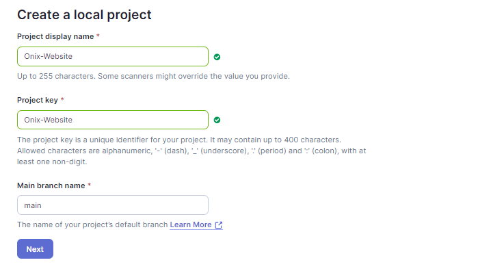
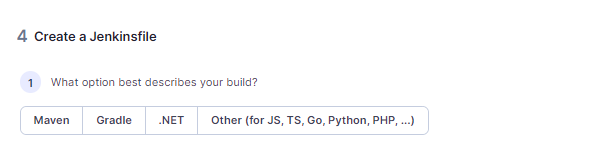
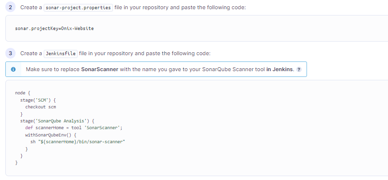
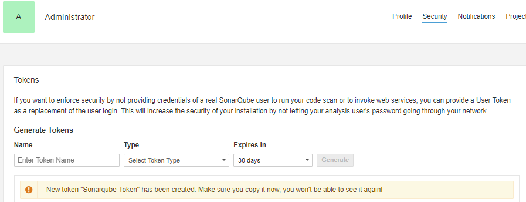
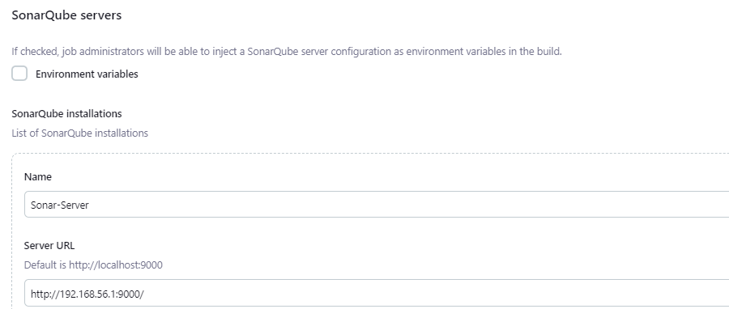
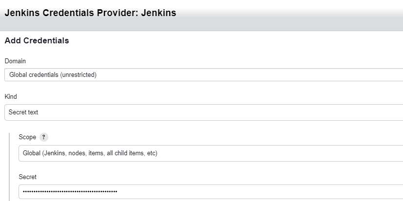
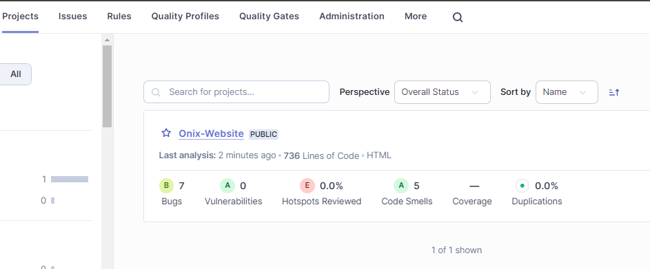

Demo project Jenkins-Sonarqube (Code Anaylsis)
-
As we are hosting Jenkins and Sonarqube on 8080 and 9090 respectively kill host (8080 and 9090) if it is used in backend.
-
Build docker image following to the docker-compose.yaml file.
-
URL for jenkins and sonarqube
-
Jenkins URL: http://localhost:8080 Unlock Jenkins and complete the setup wizard using the initialAdminPassword.
-
SonarQube URL: http://localhost:9000 Default credentials: admin/admin
-
Jenkins password
-
To shutdown all containers
-
Restart containers
-
Update src code
-
Browse free-css for css template, download any template.
-
Create a branch in git Repo and commit the src code.
-
Create a wehbook in github
-
In github > repository > setting > wehbook
- Add webhook payload url to "http://192.168.56.1:8080/github-webhook/" (jenkins URL)
- Select
- pull requests
- push
- Let me select individual events
-
then select add Wehbook at bottom.
-
To trigger pipeline in Jenkins
-
in Jenkins dashboard click on New
- Enter a item name and select Freestyle Project
- Select Source Code Management (GIT) and add Git clone URL
- Specify the respect branch
- Select GitHub hook trigger for GITScm polling
- Then click on Save
-
Select "Build Now" this will trigger a pipeline
-
Commit any file to the git repo and Jenkins build will trigger automatically
-
In Sonarqube select create a project manually
- Enter the details
 - Select Jenkins Option to analyze your repository.
- Analysis Method > Jenkins > Select GIT as platform
- Select Others
 - Copy the following code 
- Under User Account > Security > Enter the name and generate token 
- Enter the details
-
In Jenkins install Sonarqube and SSHEasy2 plugin
- Dashboard > Manage Jenkins > Plugins > Search [Sonarqube Scanner, SSHEasy2] install
-
Add Tools Configuration
- Dashboard > Manage Jenkins > Tools
- Select SonarQube Scanner installations, Enter name and Save
-
In Jenkins Dashboard > Manage Jenkins > System
- Select SonarQube servers
- Enter the input for Name and Sonarqube URL 
- In Server authentication token > Select Add > Jenkins
- In Kind select Secret Text
- Input Secret from (step 11.6) 
- In Server authentication token > Select token name and Save
-
In Jenkins Add Sonar-Qube projectkey
- Dashboard > Automated-Pipeline > Configuration
- Select Build Steps
- Select Execute SonarQube Scanner
- Add projectKey(from Step 11.5) in Analysis properties
-
In Jenkins select respective Pipeline and Select Build Now
-
In Sonarqube > Project (you can watch scanning status) 